Genearlized Linear Models
A Generalized Outline
- Logistic Regression Verus Linear Regression
- Generalized Linear Models
- Poisson Regression (Poisson Error, Long Link)
- Overdispersion
Infection by Cryptosporidium
Cryptosporidum Infection Rates

This is not linear or gaussian
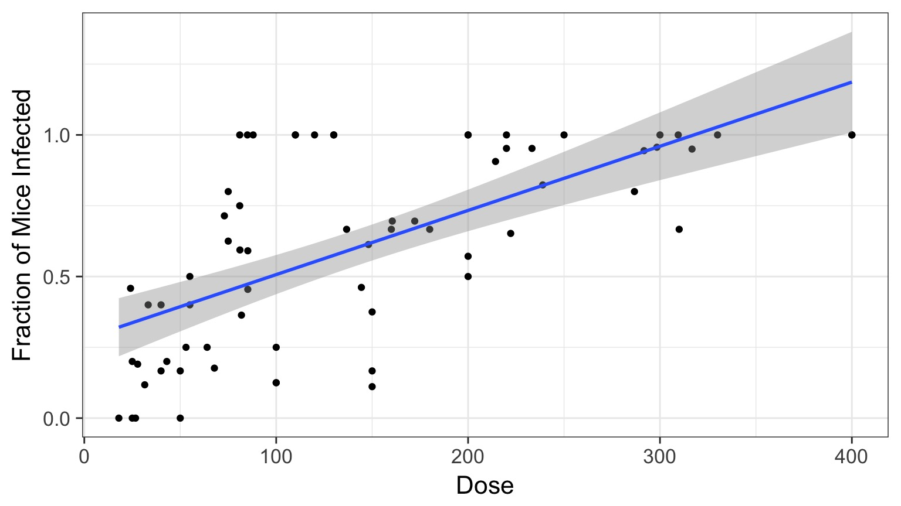
Why?
The General Linear Model
\[\Large \boldsymbol{Y_i} = \boldsymbol{\beta X_i} + \boldsymbol{\epsilon} \]
\[\Large \epsilon \sim \mathcal{N}(0,\sigma^{2})\]
The General(ized) Linear Model
\[\Large \boldsymbol{\hat{Y}_{i}} = \boldsymbol{\beta X_i} \]
\[\Large Y_i \sim \mathcal{N}(\hat{Y_i},\sigma^{2})\]
The General(ized) Linear Model
\[\Large \boldsymbol{\eta_{i}} = \boldsymbol{\beta X_i} \]
\[\Large \hat{Y_i} = \eta_{i}\] Identity Link Function
\[\Large Y_i \sim \mathcal{N}(\hat{Y_i},\sigma^{2})\]
A Generalized Linear Model
\[\Large \boldsymbol{\eta_{i}} = \boldsymbol{\beta X_i} \]
\[\Large Log(\hat{Y_i}) = \eta_{i}\] Log Link Function
\[\Large Y_i \sim \mathcal{N}(\hat{Y_i},\sigma^{2})\]
Log Link
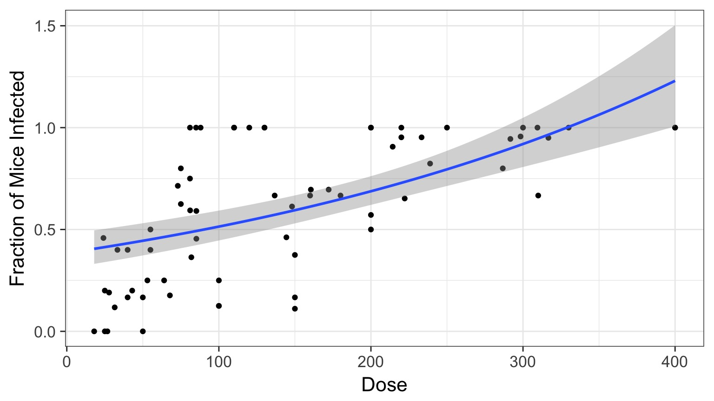
Isn’t this just a transformation?
Aren’t we just doing \[\Large \boldsymbol{log(Y_{i})} = \boldsymbol{\beta X_i} + \boldsymbol{\epsilon_i}\]A Generalized Linear Model
\[\Large \boldsymbol{\eta_{i}} = \boldsymbol{\beta X_i} \]
\[\Large Log(\hat{Y_i}) = \eta_{i}\]
\[\Large Y_i \sim \mathcal{N}(\hat{Y_i},\sigma^{2})\] Error is Normal
But This is Not Normal
Binomial Distribution
\[ Y_i \sim B(prob, size) \]
- Discrete Distribution
- prob = probability of something happening (% Infected)
- size = # of discrete trials
- Used for frequency or probability data
- We estimate coefficients that influence prob
So, Y is a Logistic Curve
\[Probability = \frac{1}{1+e^{\beta X}}\]
Generalized Linear Model with a Logit Link
\[\Large \boldsymbol{\eta_{i}} = \boldsymbol{\beta X_i} \]
\[\Large Logit(\hat{Y_i}) = \eta_{i}\] Logit Link Function
\[\Large Y_i \sim \mathcal{B}(\hat{Y_i}, size)\]
Logitistic Regression

Generalized Linear Model with Logit Link
crypto_glm <- glm(Y/N ~ Dose,
weight=N,
family=binomial(link="logit"),
data=crypto)OR, with Success and Failures
crypto_glm <- glm(cbind(Y, Y-N) ~ Dose,
family=binomial(link="logit"),
data=crypto)Outputs
| LR Chisq | Df | Pr(>Chisq) | |
|---|---|---|---|
| Dose | 233.8357 | 1 | 0 |
And logit coefficients
| term | estimate | std.error | statistic | p.value |
|---|---|---|---|---|
| (Intercept) | -1.4077690 | 0.1484785 | -9.481298 | 0 |
| Dose | 0.0134684 | 0.0010464 | 12.870912 | 0 |
The Odds
\[Odds = \frac{p}{1-p}\]\[Log-Odds = Log\frac{p}{1-p} = logit(p)\]
The Meaning of a Logit Coefficient
Logit Coefficient: A 1 unit increase in a predictor = an increase of \(\beta\) increase in the log-odds of the response.\[\beta = logit(p_2) - logit(p_1)\]
\[\beta = Log\frac{p_1}{1-p_1} - Log\frac{p_2}{1-p_2}\]
But how do we assess assumptions?
- Should still be no fitted v. residual relationship
- But QQ plots lose meaning
- Not a normal distribution
- Mean scales with variance
- Also many types of residuals
- Deviance, Pearson, raw, etc.
Randomized quantile residuals
- If model fits well, quantiles of residuals should be uniformly distributed
- I.E., for any point, if we had its distribution, there should be no bias in its quantile
- We do this via simulation
- Works for many models, and naturally via Bayesian simuation
Randomized quantile residuals: Steps
- Get ~1000 (or more) simulations of model coefficients
- For each response (y) value, create an empirical distribution from the simuations
- For each response, determine it’s quantile from that empirical distribution
- The quantiles of all y values should be uniformly distributed
- QQ plot of a uniform distribution!
- QQ plot of a uniform distribution!
Randomized quantile residuals: Visualize
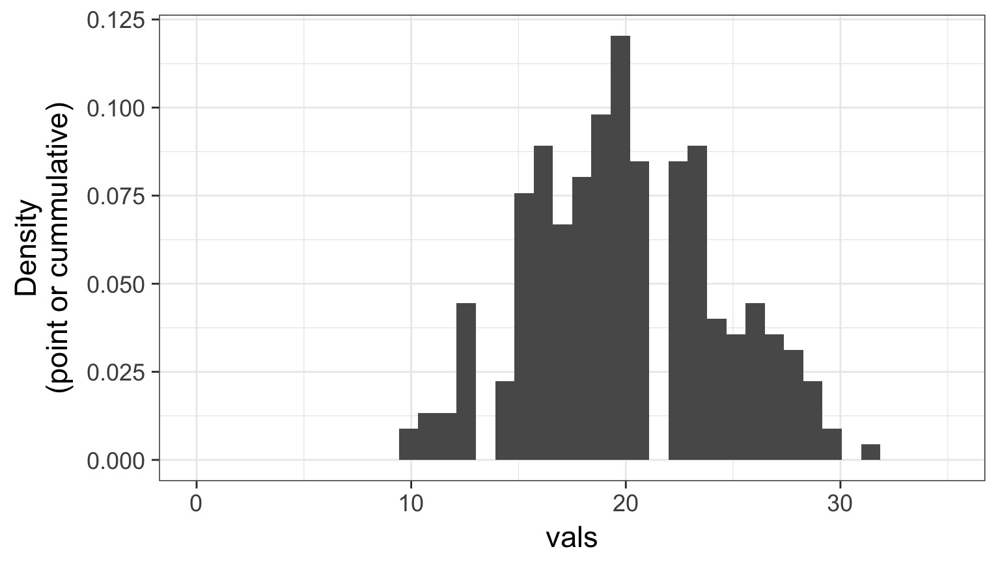
Randomized quantile residuals: Visualize
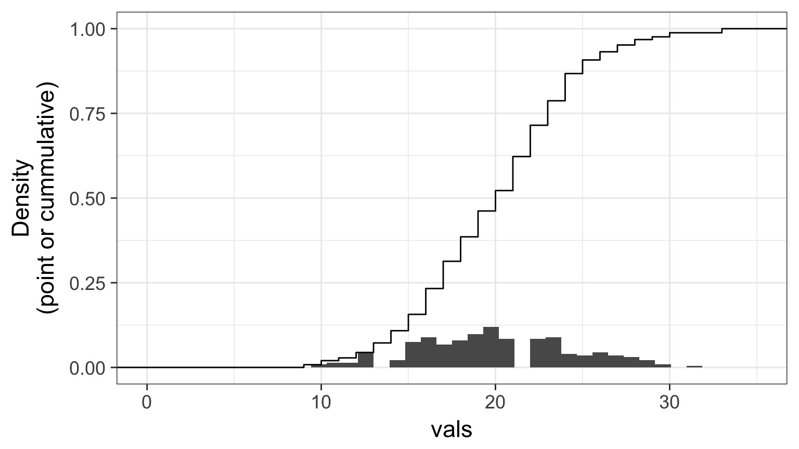
Randomized quantile residuals: Visualize
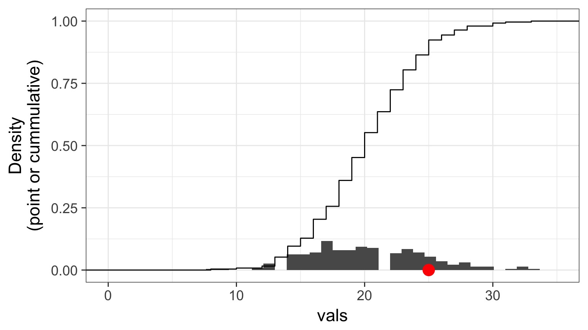
Randomized quantile residuals: Visualize
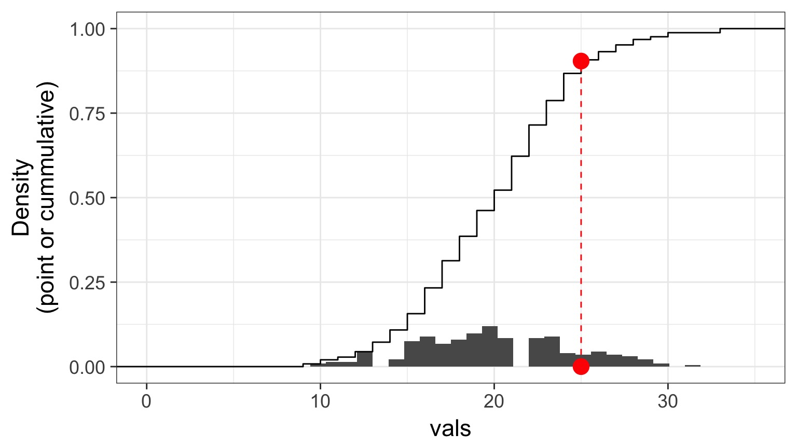
Randomized quantile residuals: Visualize
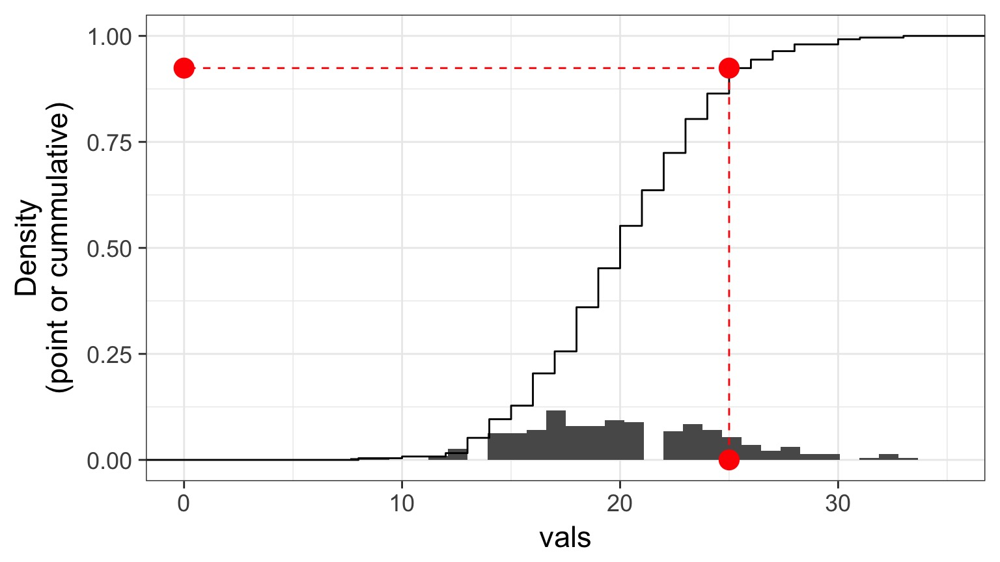
Quantile Residuals
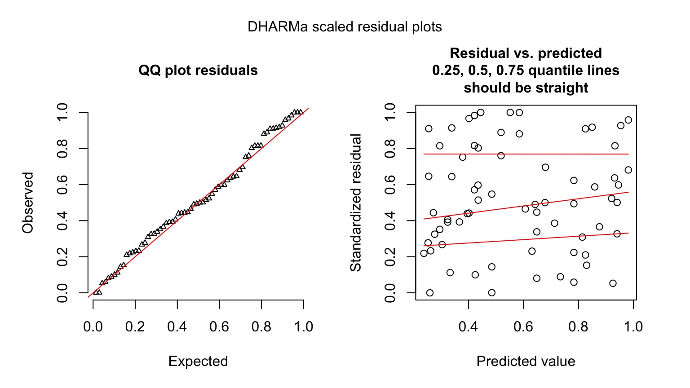
Possible overdispersion, use quasibinomial
A Generalized Outline
- Logistic Regression Verus Linear Regression
- Generalized Linear Models
- Poisson Regression (Poisson Error, Long Link)
- Overdispersion
The General Linear Model is a Special Case
\[\Large \boldsymbol{Y} = \boldsymbol{\beta X} + \boldsymbol{\epsilon}\]
Implies that: \[\boldsymbol{\hat{Y}} = \boldsymbol{\beta X}\]
and
\[\boldsymbol{Y} \sim N(\boldsymbol{\hat{Y}})\]
But what if We don’t want a Normal Distribution?
The Generalized Linear Model
\[\boldsymbol{\eta_i} = \boldsymbol{\beta X}\]
\[\boldsymbol{f(\hat{Y_i})} = \boldsymbol{\eta_i}\]
\[\boldsymbol{Y_i} = E(\boldsymbol{\hat{Y_i}}, \theta)\]
E is any distribution from the Exponential Family
\(\theta\) is an error parameter, and can be a function of Y
Generalized Linear Models: Link Functions
Basic Premise:
- We have a linear predictor, \(\eta_i = a+Bx_i\)
- That predictor is linked to the fitted value of \(Y_i\), \(\hat{Y_i}\)
- We call this a link function, such that \(g(\hat{Y_i}) = \eta_i\)
- For example, for a linear function, \(\mu_i = \eta_i\)
- For an exponential function, \(log(\mu_i) = \eta_i\)
- For example, for a linear function, \(\mu_i = \eta_i\)
Some Common Links
Identity: \(\hat{Y_i} = \eta_i\) - e.g. \(\mu = a + bx\)
Log: \(log(\hat{Y_i}) = \eta_i\) - e.g. \(\mu = e^{a + bx}\)
Logit: \(logit(\hat{Y_i}) = \eta_i\) - e.g. \(\hat{Y_i} = \frac{e^{a + bx}}{1+e^{a + bx}}\)
Inverse: \(\frac{1}{\hat{Y_i}} = \eta_i\) - e.g. \(\hat{Y_i} = (a + bx)^{-1}\)
Generalized Linear Models: Error
Basic Premise:
The error distribution is from the exponential family
- e.g., Normal, Poisson, Binomial, and more.
For these distributions, the variance is a funciton of the fitted value on the curve: \(var(Y_i) = \theta V(\hat{Y_i})\)
- For a normal distribution, \(var(Y_i) = \theta*1\) as \(V(\hat{Y_i})=1\)
- For a poisson distribution, \(var(Y_i) = 1*\mu_i\) as \(V(\hat{Y_i})=\hat{Y_i}\)
- For a normal distribution, \(var(Y_i) = \theta*1\) as \(V(\hat{Y_i})=1\)
Distributions, Canonical Links, and Dispersion
| Distribution | Canonical Link | Variance Function |
|---|---|---|
| Normal | identity | \(\theta\) |
| Poisson | log | \(\hat{Y_i}\) |
| Binomial | logit | \(\hat{Y_i}(1-\hat{Y_i})\) |
| Negative Binomial | log | \(\mu + \kappa\hat{Y_i}^2\) |
| Gamma | inverse | \(\hat{Y_i}^2\) |
| Inverse Normal | \(1/\hat{Y_i}^2\) | \(\hat{Y_i}^3\) |
The Generalized Linear Model
\[\boldsymbol{\eta_i} = \boldsymbol{\beta X}\]
\[\boldsymbol{f(\hat{Y_i})} = \boldsymbol{\eta_i}\]
\[\boldsymbol{Y_i} = E(\boldsymbol{\hat{Y_i}}, \theta)\]
E is any distribution from the Exponential Family
\(\theta\) is an error parameter, and can be a function of Y
A Generalized Outline
- Logistic Regression Verus Linear Regression
- Generalized Linear Models
- Poisson Regression (Poisson Error, Long Link)
- Overdispersion
Poisson Regression with a Log Link
\[\boldsymbol{\eta_i} = \boldsymbol{\beta X_i}\]
\[log(\boldsymbol{\hat{Y_i}}) = \boldsymbol{\eta_i}\]
\[\boldsymbol{Y_i} \sim \mathcal{P}(\boldsymbol{\hat{Y_i}})\]
What is the relationship between kelp holdfast size and number of fronds?

What About Kelp Holdfasts?

How ’bout dem residuals?
kelp_lm <- lm(FRONDS ~ HLD_DIAM, data=kelp)
What is our data and error generating process?
What is our data and error generating process?
- Data generating process should be exponential
- No values less than 1
- No values less than 1
- Error generating process should be Poisson
- Count data
What is our data and error generating process?
kelp_glm <- glm(FRONDS ~ HLD_DIAM, data=kelp,
family=poisson(link="log"))Kelp GLM Results
LR Test
| LR Chisq | Df | Pr(>Chisq) | |
|---|---|---|---|
| HLD_DIAM | 456.6136 | 1 | 0 |
Coefficients:
| term | estimate | std.error | statistic | p.value |
|---|---|---|---|---|
| (Intercept) | 1.778059 | 0.0572585 | 31.05319 | 0 |
| HLD_DIAM | 0.023624 | 0.0010502 | 22.49521 | 0 |
Kelp GLM Results
kelp_plot +
stat_smooth(method="glm",
method.args=list(family=poisson(link="log")))Kelp GLM Results

Kelp GLM Quantile Residuals
library(DHARMa)
set.seed(2017)
simulationOutput <- simulateResiduals(kelp_glm,
n = 1000)
plot(simulationOutput)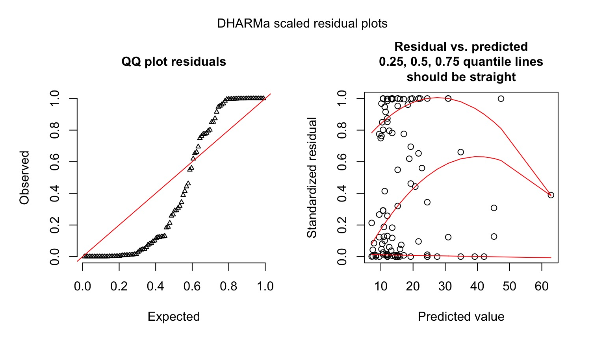
A Generalized Outline
- Logistic Regression Verus Linear Regression
- Generalized Linear Models
- Poisson Regression (Poisson Error, Long Link)
- Overdispersion
Estmation Error
Prediction Error from Poisson GLM
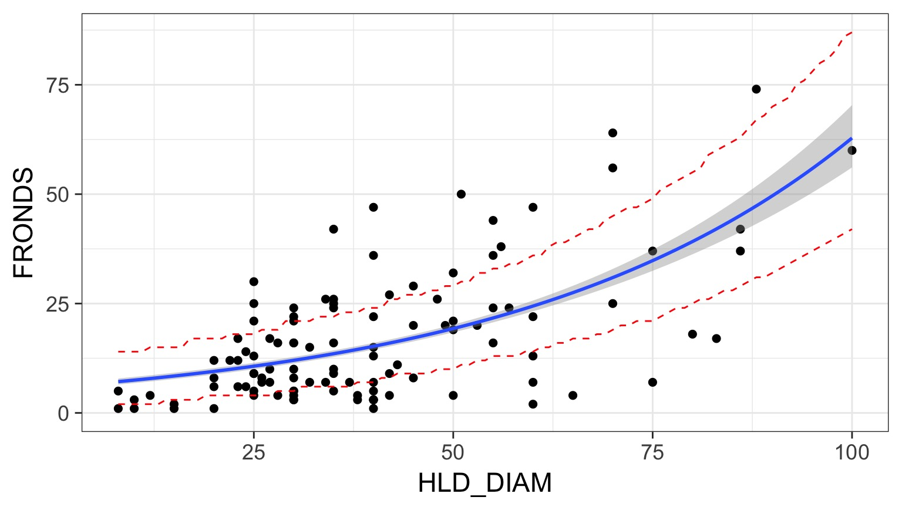
Well that doesn’t cover 95% of the data!
How We Got Prediction Intervals
pred <- predict(kelp_glm,
type="link",
newdata = data.frame(HLD_DIAM = 8:100),
se.fit=TRUE)How We Got Prediction Intervals
pred_data <- data.frame(HLD_DIAM = 8:100,
fit = kelp_glm$family$linkinv(pred$fit),
lwr.ci = kelp_glm$family$linkinv(pred$fit - 1.96*pred$se.fit),
upr.ci = kelp_glm$family$linkinv(pred$fit + 1.96*pred$se.fit)) %>%
mutate(upr.pred = qpois(0.975, lambda=round(upr.ci)),
lwr.pred = qpois(0.025, lambda=round(lwr.ci)))What is Overdispersion?
- When the variance increases faster than the mean, our data is overdispersed
- This can be solved with different distributions whose variance have different properties
- OR, we can fit a model, then scale it’s variance posthoc with a coefficient
- The likelihood of these latter models is called a Quasi-likelihood, as it does not reflect the true spread of the data
How do we test for Overdispersion?
Solutions:
- Quasi-Poisson
- Basically, Variance = \(\theta\hat{Y}\)
- Posthoc estimation of \(\theta\) - Also a similar quasibinomial - Need to use QAIC for IC comparison
- Negative Binomial
- Variance = \(\hat{Y_i}^2 + \kappa\hat{Y_i}^2\)|$
- Increases with the square, not linearly
How to tell QP v. NB Apart
- For bins of fitted values, get the average squared residual
- Is that relationship linear or squared?
- Ver Hoef and Boveng 2007
How to tell QP v. NB Apart
k <- data.frame(fit = fitted(kelp_glm),
resid = residuals(kelp_glm)) %>%
mutate(fit_groups = cut_interval(fit, 8)) %>%
group_by(fit_groups) %>%
summarize(sq_resid = mean(resid^2),
n = length(resid)) %>%
ungroup()How to tell QP v. NB Apart
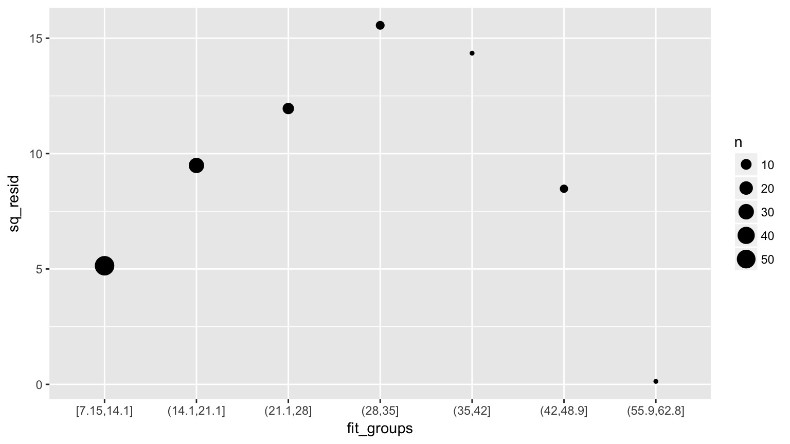
Is is linear?
Fits
kelp_glm_qp <- glm(FRONDS ~ HLD_DIAM, data=kelp,
family=quasipoisson(link="log"))OR
library(MASS)
kelp_glm_nb <- glm.nb(FRONDS ~ HLD_DIAM, data=kelp)QuasiPoisson Results
Call:
glm(formula = FRONDS ~ HLD_DIAM, family = quasipoisson(link = "log"),
data = kelp)
Deviance Residuals:
Min 1Q Median 3Q Max
-5.9021 -2.3871 -0.5574 1.6132 6.5117
Coefficients:
Estimate Std. Error t value Pr(>|t|)
(Intercept) 1.778059 0.160455 11.081 < 2e-16 ***
HLD_DIAM 0.023624 0.002943 8.027 1.45e-12 ***
---
Signif. codes: 0 '***' 0.001 '**' 0.01 '*' 0.05 '.' 0.1 ' ' 1
(Dispersion parameter for quasipoisson family taken to be 7.852847)
Null deviance: 1289.17 on 107 degrees of freedom
Residual deviance: 832.56 on 106 degrees of freedom
(32 observations deleted due to missingness)
AIC: NA
Number of Fisher Scoring iterations: 5Negative Binomial Results
Call:
glm.nb(formula = FRONDS ~ HLD_DIAM, data = kelp, init.theta = 2.178533101,
link = log)
Deviance Residuals:
Min 1Q Median 3Q Max
-2.3712 -0.9699 -0.2338 0.5116 1.9956
Coefficients:
Estimate Std. Error z value Pr(>|z|)
(Intercept) 1.657831 0.166777 9.940 < 2e-16 ***
HLD_DIAM 0.026365 0.003707 7.113 1.14e-12 ***
---
Signif. codes: 0 '***' 0.001 '**' 0.01 '*' 0.05 '.' 0.1 ' ' 1
(Dispersion parameter for Negative Binomial(2.1785) family taken to be 1)
Null deviance: 165.63 on 107 degrees of freedom
Residual deviance: 114.49 on 106 degrees of freedom
(32 observations deleted due to missingness)
AIC: 790.23
Number of Fisher Scoring iterations: 1
Theta: 2.179
Std. Err.: 0.336
2 x log-likelihood: -784.228 Prediction Interval for QP
pred_data <- pred_data %>%
mutate(upr.pred.qp = qnorm(0.975,
mean = upr.ci,
sd = sqrt(upr.ci*summary(kelp_glm_qp)$dispersion)),
lwr.pred.qp = qnorm(0.025, mean = lwr.ci,
sd = sqrt(lwr.ci*summary(kelp_glm_qp)$dispersion)))Looks Good!
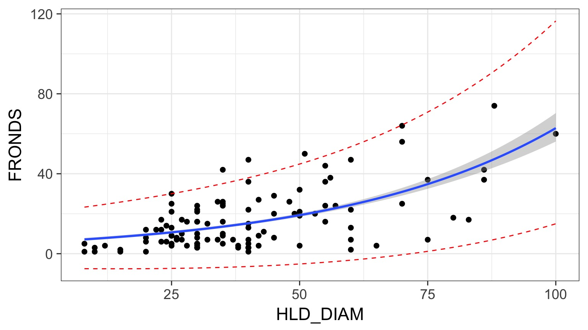
You Try: Wolf Inbreeding and Litter Size
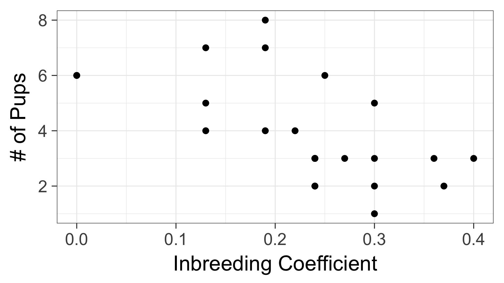